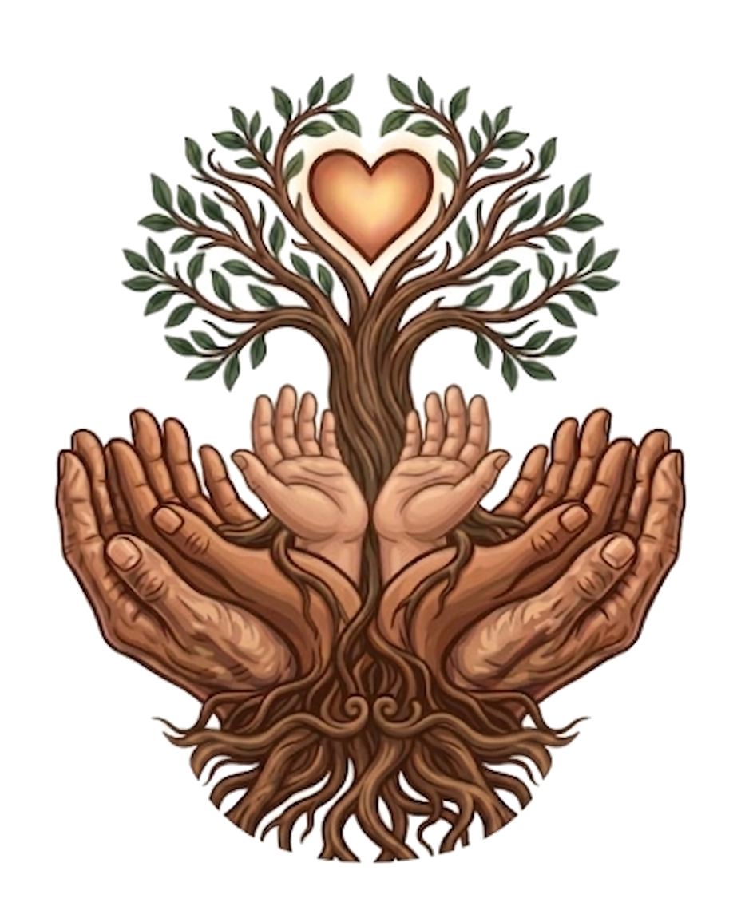

Across the world's oldest traditions, there is always a first mother. She is the one who was present before language, before borders, before the naming of things.
She is not worshipped from a distance. She is felt — in the soil under bare feet, in the weight of river water on the skin, in the way a plant leans toward light even in darkness. She is the original intelligence of the natural world, and she has never stopped speaking.
We carry her name as a reminder of what we return to when we strip away the synthetic, the artificial, the unnecessary. A genuine orientation toward what was here long before us and will be here long after — the earth as mother, the plant as medicine, the body as something worthy of tending.
She is the reason we source with care. The reason we list every ingredient. The reason we do not add what does not serve. Her standard is older than any certification, any regulation, any beauty industry standard. We simply try to meet it.
Long before laboratories, before clinical trials, before the industrialization of wellness, human beings kept botanical knowledge. They carried it in their hands. They passed it through generations in the form of recipes, rituals, and the kind of knowing that comes from watching the same plant grow in the same soil for a hundred years.
Botanica is the word for that entire body of knowledge — the accumulated understanding of what the plant world offers the human body when we approach it with patience, respect, and attention. It is a word that belongs to no single culture. Every culture has its own version of it.
Our formulas are not folk medicine and they make no medical claims. But they are informed by this tradition — by the understanding that shea butter has been used on skin in West Africa for thousands of years, that frankincense resin was traded across ancient trade routes because of what it offered, that geranium has protected skin in dry climates for longer than any modern skincare brand has existed.
We are not inventing anything. We are remembering.
The original mother, and the knowledge of plants she gave us.
These two words together are a philosophy, not just a name.
They describe a way of working — sourcing from the earth with integrity,
formulating without what does not belong, and offering something to the skin
that has roots far deeper than any trend.
When you open a jar of Atabey Botanica, you are participating in something that has been practiced in one form or another for as long as human beings have lived close to plants. The ritual of tending the body with what the earth offers. The simple, radical act of trusting nature to be enough.